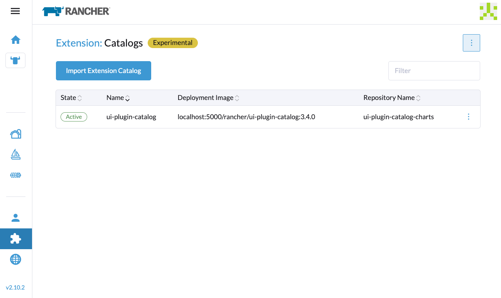
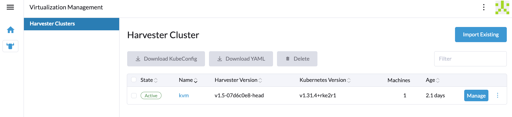

|
This is unreleased documentation for SUSE® Virtualization v1.6 (Dev). |
Air-Gapped Environment
This section describes how to use SUSE Virtualization in an air-gapped environment. Some use cases could be where SUSE Virtualization will be installed offline, behind a firewall, or behind a proxy.
The ISO image contains all the packages to make it work in an air gapped environment.
Working Behind an HTTP Proxy
In some environments, the connection to external services, from the servers or VMs, requires an HTTP(S) proxy.
Configure an HTTP Proxy During Installation
You can configure the HTTP(S) proxy during the ISO installation as shown in picture below:

Configure an HTTP Proxy
You can configure the HTTP(S) proxy using the UI.
-
Go to the settings page of the UI.
-
Find the
http-proxysetting, click ⋮ > Edit setting -
Enter the value(s) for
http-proxy,https-proxyandno-proxy.

|
SUSE Virtualization appends necessary addresses to user configured When the nodes in the cluster do not use a proxy to communicate with each other, the CIDR needs to be added to |
Guest Cluster Images
All necessary images to install and run SUSE Virtualization are conveniently packaged into the ISO, eliminating the need to pre-load images on bare-metal nodes. A SUSE Virtualization cluster manages them independently and effectively behind the scenes.
However, it’s essential to understand a guest Kubernetes cluster (for example, a SUSE® Rancher Prime: RKE2 cluster) created by the Harvester Node Driver is a distinct entity from a SUSE Virtualization cluster. A guest cluster operates within VMs and requires pulling images either from the internet or a private registry.
If the Cloud Provider option is configured to SUSE Virtualization in a guest Kubernetes cluster, it deploys the Harvester Cloud Provider and Container Storage Interface (CSI) driver.

As a result, we recommend monitoring each RKE2 release in your air-gapped environment and pulling the required images into your private registry. Please refer to the Support Matrix for the best Harvester Cloud Provider and CSI driver capability support.
Integrate with an External Rancher
Rancher determines the rancher-agent image to be used whenever a SUSE Virtualization cluster is imported. If the image is not included in the SUSE Virtualization ISO, it must be pulled from the internet and loaded on each node, or pushed to the SUSE Virtualization cluster’s registry.
# Run the following commands on a computer that can access both the internet and the {harvester-product-name} cluster.
docker pull rancher/rancher-agent:<version>
docker save rancher/rancher-agent:<version> -o rancher-agent-<version>.tar
# Copy the image TAR file to the air-gapped environment.
scp rancher-agent-<version>.tar rancher@<harvester-node-ip>:/tmp
# Use SSH to connect to the {harvester-product-name} node, and then load the image.
ssh rancher@<harvester-node-ip>
sudo -i
docker load -i /tmp/rancher-agent-<version>.tarHarvester UI Extension with Rancher Integration
The Harvester UI Extension is required to access the SUSE Virtualization UI in Rancher v2.10.x and later versions. However, installing the extension over the network is not possible in air-gapped environments, so you must perform the following workaround:
-
Pull the image rancher/ui-plugin-catalog with the newest tag.
-
On the Rancher UI, go to Extensions, and then select ⋮ → Manage Extension Catalogs.

-
Specify the required information.

-
Catalog Image Reference: Specify the private registry URL and image repository.
-
Image Pull Secrets: Specify the secret used to access the registry when a username and password are required. You must create that secret in the
cattle-ui-plugin-systemnamespace. Use eitherkubernetes.io/dockercfgorkubernetes.io/dockerconfigjsonas the value oftype.Example:
apiVersion: v1 kind: Secret metadata: name: my-registry-secret-rancher namespace: cattle-ui-plugin-system type: kubernetes.io/dockerconfigjson data: .dockerconfigjson: {base64 encoded data}
-
-
Click Load, and then allow some time for the extension to be loaded.

-
On the Available tab, locate the extension named Harvester, and then click Install.

-
Select the version that matches the SUSE Virtualization cluster, and then click Install.
For more information, see the Harvester UI Extension Support Matrix.


-
Go to Virtualization Management → Harvester Clusters.
You can now import SUSE Virtualization clusters and access the SUSE Virtualization UI.

Time requirements
A reliable Network Time Protocol (NTP) server is critical for maintaining the correct system time across all nodes in a Kubernetes cluster, especially when running SUSE Virtualization. Kubernetes relies on etcd, a distributed key-value store, which requires precise time synchronization to ensure data consistency and prevent issues with leader election, log replication, and cluster stability.
In an air-gapped environment, where external time sources are unavailable, maintaining an accurate and synchronized time becomes even more crucial. Without proper time synchronization, cluster nodes may experience authentication failures, scheduling issues, or even data corruption. To mitigate these risks, organizations should deploy a robust, internal NTP server that synchronizes time across all systems within the network.
Ensuring accurate and consistent time across the cluster is essential for reliability, security, and overall system integrity.
Troubleshooting
UI Extensions Do Not Appear
If the Extensions screen is empty, go to Repositories (⋮ → Manage Repositories) and then click Refresh.


Installation Failed
If you encounter an error during installation, check the uiplugins resource.

Example:
bash-4.4# k get uiplugins -A
NAMESPACE NAME PLUGIN NAME VERSION STATE
cattle-ui-plugin-system harvester harvester 1.0.3 pending
bash-4.4# k get uiplugins harvester --namespace cattle-ui-plugin-system -o yaml
apiVersion: catalog.cattle.io/v1
kind: UIPlugin
metadata:
# skip
name: harvester
namespace: cattle-ui-plugin-system
spec:
plugin:
endpoint: http://ui-plugin-catalog-svc.cattle-ui-plugin-system:8080/plugin/harvester-1.0.3Ensure that svc.namespace is accessible from Rancher. If that endpoint is not accessible, you can directly use a cluster IP such as 10.43.33.58:8080/plugin/harvester-1.0.3.